Patient Info
Edema
Main Tumor
Necrotic
UPENN-GBM-00002
Count 168592, 63652 Vertices, 127892 Triangles
Count 27793, 22658 Vertices, 45516 Triangles
Count 15366, 11983 Vertices, 24046 Triangles
UPENN-GBM-00006
Count 51199, 28085 Vertices, 56714 Triangles
Count 6584, 8847 Vertices, 17714 Triangles
Count 9089, 3862 Vertices, 7700 Triangles
UPENN-GBM-00008
Count 25950, 14538 Vertices, 29100 Triangles
Count 3028, 3328 Vertices, 6744 Triangles
Count 714, 1287 Vertices, 2610 Triangles
UPENN-GBM-00009
Count 113626, 58413 Vertices, 117802 Triangles
Count 17743, 8583 Vertices, 17174 Triangles
Count 1637, 4488 Vertices, 9180 Triangles

UPENN-GBM-00011
Count 76890, 27466 Vertices, 55160 Triangles
Count 15644, 15324 Vertices, 31228 Triangles
Count 10698, 13123 Vertices, 26698 Triangles
UPENN-GBM-00013
Count 7489, 8068 Vertices, 16228 Triangles

Count 10863, 12758 Vertices, 25908 Triangles
Count 3408, 7065 Vertices, 14406 Triangles
UPENN-GBM-00014
Count 94362, 42796 Vertices, 86180 Triangles

Count 25015, 26444 Vertices, 54004 Triangles
Count 19716, 22929 Vertices, 47018 Triangles
UPENN-GBM-00016
Count 30125, 18303 Vertices, 36906 Triangles
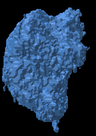Count 6187, 6035 Vertices, 12078 Triangles
Count 3333, 3281 Vertices, 6582 Triangles
UPENN-GBM-00017
Count 32075, 22415 Vertices, 45406 Triangles
Count 1211, 1263 Vertices, 2506 Triangles
Count 157, 604 Vertices, 1192 Triangles

UPENN-GBM-00018
Count 106834, 65468 Vertices, 132664 Triangles
Count 50901, 37434 Vertices, 75936 Triangles

Count 25359, 28391 Vertices, 57694 Triangles
UPENN-GBM-00020
Count 16020, 8948 Vertices, 17944 Triangles
Count 7910, 7383 Vertices, 14838 Triangles

Count 4850, 5268 Vertices, 10760 Triangles
UPENN-GBM-00021
Count 37385, 27568 Vertices, 55820 Triangles
Count 6534, 4213 Vertices, 8422 Triangles
Count 464, 1120 Vertices, 2144 Triangles
UPENN-GBM-00026
Count 39172, 19129 Vertices, 38522 Triangles
Count 8609, 6652 Vertices, 13504 Triangles
Count 2033, 2758 Vertices, 5588 Triangles
UPENN-GBM-00029
Count 56221, 37526 Vertices, 75996 Triangles
Count 18120, 39274 Vertices, 81932 Triangles
Count 74071, 35208 Vertices, 71876 Triangles
UPENN-GBM-00030
Count 23622, 20347 Vertices, 41270 Triangles
Count 6032, 6495 Vertices, 13146 Triangles
Count 2220, 3439 Vertices, 6830 Triangles
UPENN-GBM-00031
Count 53713, 23251 Vertices, 46802 Triangles
Count 1633, 2135 Vertices, 4266 Triangles
Count 536, 834 Vertices, 1652 Triangles
UPENN-GBM-00033
Count 31752, 22408 Vertices, 45220 Triangles
Count 3953, 8867 Vertices, 18502 Triangles
Count 10488, 7152 Vertices, 14536 Triangles
UPENN-GBM-00035
Count 87907, 32544 Vertices, 65128 Triangles
Count 16577, 14875 Vertices, 30014 Triangles
Count 13650, 8289 Vertices, 16758 Triangles
UPENN-GBM-00040
Count 52789, 32080 Vertices, 64628 Triangles
Count 18550, 20429 Vertices, 41234 Triangles
Count 8778, 15484 Vertices, 31428 Triangles
UPENN-GBM-00041
Count 50214, 31231 Vertices, 62538 Triangles
Count 30986, 27967 Vertices, 56202 Triangles
Count 23066, 14449 Vertices, 29178 Triangles
UPENN-GBM-00043
Count 107679, 38478 Vertices, 77148 Triangles
Count 9038, 9593 Vertices, 19518 Triangles
Count 8470, 13851 Vertices, 28506 Triangles
UPENN-GBM-00054
Count 123550, 46751 Vertices, 93974 Triangles
Count 31582, 20947 Vertices, 42022 Triangles
Count 21719, 20463 Vertices, 42282 Triangles
UPENN-GBM-00119
Count 32769, 16317 Vertices, 32694 Triangles
Count 12891, 10197 Vertices, 20506 Triangles
Count 6092, 4003 Vertices, 7966 Triangles
UPENN-GBM-00121
Count 122928, 49702 Vertices, 99928 Triangles
Count 28294, 23315 Vertices, 46798 Triangles
Count 20064, 11855 Vertices, 23590 Triangles
UPENN-GBM-00122
Count 67019, 32261 Vertices, 65030 Triangles
Count 15146, 19733 Vertices, 40362 Triangles
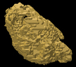Count 19078, 18561 Vertices, 38486 Triangles
UPENN-GBM-00124
Count 35106, 19663 Vertices, 39318 Triangles
Count 20978, 20623 Vertices, 41410 Triangles
Count 19846, 9947 Vertices, 19938 Triangles
UPENN-GBM-00131
Count 36833, 23470 Vertices, 47596 Triangles
Count 6261, 8317 Vertices, 16710 Triangles
Count 4581, 3327 Vertices, 6578 Triangles
UPENN-GBM-00134
Count 29549, 23590 Vertices, 47952 Triangles
Count 2564, 6030 Vertices, 12524 Triangles
Count 5133, 5062 Vertices, 10396 Triangles
UPENN-GBM-00135
Count 17230, 16731 Vertices, 33954 Triangles
Count 1396, 1828 Vertices, 3636 Triangles
Count 342, 940 Vertices, 1972 Triangles
UPENN-GBM-00136
Count 40311, 37216 Vertices, 75644 Triangles
Count 40470, 38584 Vertices, 78884 Triangles
Count 16204, 20233 Vertices, 41606 Triangles
UPENN-GBM-00137
Count 34656, 26070 Vertices, 52840 Triangles
Count 1371, 1925 Vertices, 3866 Triangles
Count 146, 381 Vertices, 730 Triangles
UPENN-GBM-00138
Count 67029, 29834 Vertices, 59940 Triangles
Count 24398, 14656 Vertices, 29400 Triangles
Count 7231, 8450 Vertices, 17068 Triangles
UPENN-GBM-00139
Count 70401, 51847 Vertices, 104806 Triangles
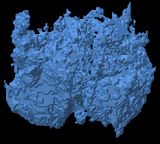Count 32338, 36823 Vertices, 74838 Triangles

Count 29707, 29333 Vertices, 58930 Triangles
UPENN-GBM-00140
Count 25737, 25273 Vertices, 51762 Triangles
Count 2041, 3252 Vertices, 6692 Triangles
Count 1420, 2047 Vertices, 4138 Triangles
UPENN-GBM-00141
Count 75685, 30540 Vertices, 61428 Triangles
Count 6170, 5441 Vertices, 10926 Triangles
Count 1463, 3137 Vertices, 6442 Triangles
UPENN-GBM-00143
Count 14606, 12618 Vertices, 25288 Triangles
Count 32423, 40895 Vertices, 83490 Triangles
Count 35580, 35039 Vertices, 71090 Triangles
UPENN-GBM-00144
Count 103869, 47379 Vertices, 95126 Triangles
Count 13194, 11098 Vertices, 22356 Triangles
Count 4276, 4942 Vertices, 9868 Triangles
UPENN-GBM-00146
Count 20738, 8793 Vertices, 17566 Triangles
Count 1042, 1095 Vertices, 2190 Triangles
Count 146, 239 Vertices, 478 Triangles
UPENN-GBM-00147
Count 28937, 18167 Vertices, 36466 Triangles
Count 10958, 11238 Vertices, 22756 Triangles
Count 5930, 5687 Vertices, 11530 Triangles
UPENN-GBM-00148
Count 128425, 44053 Vertices, 88398 Triangles
Count 9130, 9960 Vertices, 19976 Triangles
Count 12183, 12966 Vertices, 26368 Triangles
UPENN-GBM-00149
Count 42526, 32879 Vertices, 66674 Triangles
Count 31473, 21142 Vertices, 42420 Triangles
Count 6227, 8441 Vertices, 16894 Triangles
UPENN-GBM-00151
Count 103140, 36500 Vertices, 73428 Triangles
Count 8587, 8751 Vertices, 17554 Triangles
Count 6576, 10695 Vertices, 22514 Triangles
UPENN-GBM-00096
Count 36409, 23431 Vertices, 46970 Triangles
Count 17540, 16498 Vertices, 33076 Triangles
Count 19285, 7475 Vertices, 14882 Triangles
UPENN-GBM-00100
Count 145703, 56563 Vertices, 113906 Triangles
Count 23750, 22041 Vertices, 44718 Triangles
Count 10966, 12635 Vertices, 25718 Triangles
UPENN-GBM-00101
Count 41029, 28314 Vertices, 57108 Triangles
Count 16792, 16759 Vertices, 33758 Triangles
Count 8598, 7776 Vertices, 15596 Triangles
UPENN-GBM-00102
Count 5642, 11177 Vertices, 22922 Triangles
Count 9344, 12382 Vertices, 25328 Triangles
Count 5715, 5762 Vertices, 11664 Triangles
UPENN-GBM-00105
Count 54734, 23970 Vertices, 48016 Triangles
Count 5745, 5321 Vertices, 10690 Triangles
Count 1648, 2179 Vertices, 4362 Triangles
UPENN-GBM-00106
Count 7832, 6906 Vertices, 14100 Triangles
Count 2719, 2940 Vertices, 5888 Triangles
Count 767, 1024 Vertices, 2048 Triangles
UPENN-GBM-00107
Count 91891, 52109 Vertices, 105490 Triangles
Count 6213, 7235 Vertices, 14622 Triangles
Count 1644, 3953 Vertices, 8010 Triangles
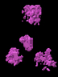UPENN-GBM-00108
Count 58747, 40927 Vertices, 82642 Triangles
Count 22131, 20781 Vertices, 41738 Triangles
Count 6598, 9372 Vertices, 18868 Triangles
UPENN-GBM-00112
Count 8930, 12494 Vertices, 25588 Triangles
Count 9563, 12710 Vertices, 26052 Triangles
Count 7868, 7411 Vertices, 15090 Triangles
UPENN-GBM-00113
Count 98375, 40353 Vertices, 81090 Triangles
Count 16228, 12581 Vertices, 25306 Triangles
Count 7955, 13543 Vertices, 27950 Triangles
UPENN-GBM-00114
Count 46559, 23920 Vertices, 48072 Triangles
Count 24463, 24791 Vertices, 50050 Triangles
Count 20446, 15618 Vertices, 31272 Triangles
UPENN-GBM-00115
Count 8935, 6597 Vertices, 13234 Triangles
Count 5177, 4373 Vertices, 8782 Triangles
Count 566, 776 Vertices, 1508 Triangles
UPENN-GBM-00117
Count 164057, 52676 Vertices, 105816 Triangles
Count 15313, 17974 Vertices, 36576 Triangles
Count 9562, 10923 Vertices, 22218 Triangles
UPENN-GBM-00060
Count 86006, 36028 Vertices, 72392 Triangles
Count 7489, 8912 Vertices, 17848 Triangles
Count 7062, 10206 Vertices, 20560 Triangles
UPENN-GBM-00062
Count 58988, 29751 Vertices, 59662 Triangles
Count 3448, 4592 Vertices, 9264 Triangles
Count 1552, 1644 Vertices, 3208 Triangles
UPENN-GBM-00066
Count 42935, 27108 Vertices, 54572 Triangles
Count 1688, 2512 Vertices, 5104 Triangles
Count 341, 675 Vertices, 1350 Triangles
UPENN-GBM-00069
Count 111640, 49103 Vertices, 98442 Triangles
Count 18581, 6471 Vertices, 12930 Triangles
Count 109, 349 Vertices, 686 Triangles
UPENN-GBM-00073
Count 23196, 21427 Vertices, 43546 Triangles
Count 9812, 14302 Vertices, 29376 Triangles
Count 10654, 16242 Vertices, 34060 Triangles
UPENN-GBM-00075
Count 10983, 10419 Vertices, 21010 Triangles
Count 10978, 10242 Vertices, 20484 Triangles
Count 10033, 4403 Vertices, 8794 Triangles
UPENN-GBM-00076
Count 56807, 38116 Vertices, 76940 Triangles
Count 26017, 51243 Vertices, 105630 Triangles
Count 92434, 61916 Vertices, 127388 Triangles
UPENN-GBM-00080
Count 30958, 24107 Vertices, 48690 Triangles
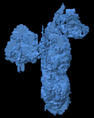Count 3020, 4168 Vertices, 8444 Triangles

Count 2589, 4972 Vertices, 10252 Triangles

UPENN-GBM-00082
Count 37227, 20509 Vertices, 41102 Triangles
Count 18315, 17879 Vertices, 36430 Triangles
Count 12223, 13821 Vertices, 28402 Triangles
UPENN-GBM-00083
Count 23551, 18548 Vertices, 37340 Triangles
Count 10934, 11437 Vertices, 23330 Triangles
Count 6563, 5326 Vertices, 10688 Triangles
UPENN-GBM-00086
Count 120010, 54062 Vertices, 108568 Triangles
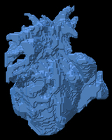Count 24627, 13058 Vertices, 26072 Triangles
Count 4920, 5693 Vertices, 11250 Triangles
UPENN-GBM-00088
Count 66954, 38070 Vertices, 76508 Triangles
Count 23405, 14190 Vertices, 28412 Triangles

Count 4882, 8264 Vertices, 16836 Triangles

UPENN-GBM-00091
Count 15287, 18906 Vertices, 38352 Triangles
Count 32791, 25431 Vertices, 50942 Triangles
Count 10049, 11278 Vertices, 22516 Triangles
UPENN-GBM-00059
Count 85839, 44034 Vertices, 88540 Triangles
Count 12959, 14820 Vertices, 29896 Triangles
Count 28177, 25523 Vertices, 51950 Triangles
UPENN-GBM-00093
Count 31351, 31236 Vertices, 63240 Triangles
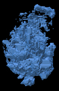Count 40583, 29116 Vertices, 58448 Triangles
Count 19617, 22658 Vertices, 46116 Triangles
UPENN-GBM-00118
Count 63557, 45273 Vertices, 91546 Triangles
Count 26346, 30037 Vertices, 61354 Triangles
Count 10824, 14401 Vertices, 29466 Triangles
UPENN-GBM-00154
Count 21114, 22310 Vertices, 45004 Triangles
Count 25344, 21767 Vertices, 43806 Triangles
Count 8604, 9104 Vertices, 18348 Triangles
UPENN-GBM-00197
Count 106734, 29996 Vertices, 60072 Triangles

Count 22585, 19585 Vertices, 39578 Triangles
Count 14468, 19687 Vertices, 40418 Triangles
UPENN-GBM-00252
Count 27467, 19425 Vertices, 39038 Triangles
Count 9595, 11309 Vertices, 22742 Triangles
Count 7335, 4769 Vertices, 9570 Triangles
UPENN-GBM-00284
Count 50427, 31554 Vertices, 63240 Triangles
Count 42123, 29271 Vertices, 58666 Triangles
Count 15593, 14005 Vertices, 28086 Triangles
UPENN-GBM-00371
Count 42177, 20162 Vertices, 40368 Triangles
Count 8075, 6357 Vertices, 12762 Triangles
Count 2181, 2621 Vertices, 5238 Triangles
UPENN-GBM-00285
Count 24175, 14612 Vertices, 29452 Triangles
Count 9541, 4858 Vertices, 9740 Triangles
Count 595, 1017 Vertices, 2078 Triangles
UPENN-GBM-00290
Count 9576, 8958 Vertices, 18112 Triangles
Count 8207, 4145 Vertices, 8246 Triangles
Count 98, 383 Vertices, 710 Triangles
UPENN-GBM-00294
Count 72556, 36980 Vertices, 74264 Triangles
Count 21853, 14220 Vertices, 28536 Triangles
Count 6272, 6558 Vertices, 13172 Triangles
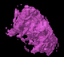UPENN-GBM-00307
Count 12746, 9090 Vertices, 18204 Triangles
Count 2795, 2228 Vertices, 4452 Triangles
Count 51, 178 Vertices, 332 Triangles
UPENN-GBM-00312
Count 17394, 14427 Vertices, 29326 Triangles
Count 17570, 16136 Vertices, 32496 Triangles
Count 8380, 8689 Vertices, 17486 Triangles
UPENN-GBM-00330
Count 101634, 45172 Vertices, 90684 Triangles
Count 48269, 27075 Vertices, 54246 Triangles
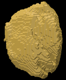Count 20187, 13915 Vertices, 27934 Triangles
UPENN-GBM-00344
Count 119061, 36885 Vertices, 74050 Triangles
Count 4284, 5625 Vertices, 11354 Triangles
Count 2257, 5296 Vertices, 10696 Triangles
UPENN-GBM-00351
Count 29536, 20321 Vertices, 40986 Triangles
Count 17921, 16953 Vertices, 34042 Triangles

Count 9330, 17563 Vertices, 36450 Triangles
UPENN-GBM-00356
Count 28318, 15490 Vertices, 31248 Triangles
Count 3789, 4693 Vertices, 9490 Triangles
Count 3922, 5918 Vertices, 12148 Triangles
UPENN-GBM-00360
Count 51094, 28582 Vertices, 57420 Triangles

Count 24255, 23997 Vertices, 48246 Triangles
Count 27685, 13873 Vertices, 27786 Triangles
UPENN-GBM-00362
Count 70852, 28086 Vertices, 56412 Triangles
Count 14194, 8952 Vertices, 17876 Triangles
Count 5533, 3498 Vertices, 6964 Triangles
UPENN-GBM-00367
Count 50293, 28955 Vertices, 58354 Triangles
Count 20736, 19834 Vertices, 39832 Triangles
Count 16484, 11751 Vertices, 23626 Triangles
UPENN-GBM-00368
Count 65434, 27803 Vertices, 55738 Triangles
Count 9819, 7635 Vertices, 15314 Triangles
Count 2881, 3082 Vertices, 6180 Triangles
UPENN-GBM-00253
Count 38056, 26200 Vertices, 52828 Triangles
Count 22697, 25282 Vertices, 51476 Triangles
Count 15832, 18441 Vertices, 37786 Triangles
UPENN-GBM-00254
Count 68999, 45827 Vertices, 92598 Triangles
Count 35712, 48991 Vertices, 99430 Triangles
Count 79950, 37694 Vertices, 76536 Triangles
UPENN-GBM-00256
Count 23190, 12706 Vertices, 25488 Triangles
Count 10670, 13789 Vertices, 28150 Triangles
Count 8217, 14921 Vertices, 30802 Triangles
UPENN-GBM-00259
Count 38463, 21433 Vertices, 43206 Triangles
Count 7988, 8159 Vertices, 16414 Triangles
Count 3703, 5068 Vertices, 10132 Triangles
UPENN-GBM-00261
Count 32153, 25011 Vertices, 50674 Triangles
Count 4314, 6145 Vertices, 12610 Triangles
Count 2853, 6832 Vertices, 14384 Triangles
UPENN-GBM-00262
Count 110696, 49946 Vertices, 100376 Triangles
Count 35917, 25721 Vertices, 51498 Triangles
Count 22803, 14622 Vertices, 29232 Triangles
UPENN-GBM-00264
Count 17036, 12775 Vertices, 25738 Triangles
Count 5877, 5070 Vertices, 10160 Triangles
Count 2038, 2283 Vertices, 4574 Triangles
UPENN-GBM-00266
Count 3691, 5397 Vertices, 11046 Triangles
Count 1454, 1923 Vertices, 3878 Triangles
Count 2135, 3779 Vertices, 7866 Triangles
UPENN-GBM-00270
Count 33056, 18483 Vertices, 37046 Triangles
Count 6721, 6531 Vertices, 13142 Triangles
Count 3705, 5923 Vertices, 12046 Triangles
UPENN-GBM-00272
Count 13849, 13127 Vertices, 26722 Triangles
Count 8450, 10828 Vertices, 21860 Triangles
Count 9230, 4705 Vertices, 9418 Triangles
UPENN-GBM-00274
Count 58414, 49788 Vertices, 101008 Triangles
Count 8325, 12633 Vertices, 26090 Triangles
Count 12042, 15495 Vertices, 31878 Triangles
UPENN-GBM-00275
Count 3690, 6393 Vertices, 13030 Triangles
Count 4573, 5088 Vertices, 10280 Triangles
Count 1729, 2775 Vertices, 5626 Triangles
UPENN-GBM-00277
Count 63058, 25788 Vertices, 51684 Triangles
Count 7258, 7873 Vertices, 15850 Triangles
Count 3193, 4403 Vertices, 8834 Triangles
UPENN-GBM-00201
Count 6222, 6149 Vertices, 12378 Triangles
Count 1233, 1103 Vertices, 2206 Triangles
Count 0, 0 Vertices, 0 Triangles

UPENN-GBM-00205
Count 58016, 28738 Vertices, 57532 Triangles
Count 30022, 30346 Vertices, 61464 Triangles
Count 46914, 23259 Vertices, 46646 Triangles
UPENN-GBM-00206
Count 21053, 11372 Vertices, 22800 Triangles
Count 2865, 2898 Vertices, 5836 Triangles
Count 967, 1518 Vertices, 3012 Triangles
UPENN-GBM-00208
Count 43781, 25590 Vertices, 51508 Triangles
Count 8665, 12553 Vertices, 25470 Triangles
Count 6796, 5823 Vertices, 11566 Triangles
UPENN-GBM-00215
Count 52653, 26739 Vertices, 53602 Triangles
Count 14064, 13588 Vertices, 27232 Triangles
Count 4791, 6160 Vertices, 12360 Triangles
UPENN-GBM-00217
Count 85760, 39543 Vertices, 79530 Triangles
Count 30867, 18514 Vertices, 37248 Triangles
Count 13503, 11922 Vertices, 23836 Triangles
UPENN-GBM-00226
Count 28974, 20821 Vertices, 41950 Triangles
Count 14274, 18806 Vertices, 38132 Triangles
Count 19655, 16746 Vertices, 33728 Triangles
UPENN-GBM-00227
Count 124166, 89386 Vertices, 179412 Triangles
Count 15804, 21399 Vertices, 43450 Triangles
Count 18914, 17171 Vertices, 34190 Triangles
UPENN-GBM-00228
Count 22433, 24151 Vertices, 48974 Triangles
Count 12670, 20086 Vertices, 40852 Triangles
Count 22408, 21978 Vertices, 45004 Triangles
UPENN-GBM-00238
Count 9227, 9448 Vertices, 19004 Triangles
Count 7499, 8947 Vertices, 18038 Triangles
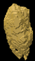Count 7324, 4939 Vertices, 9890 Triangles
UPENN-GBM-00240
Count 6831, 9040 Vertices, 18172 Triangles
Count 37439, 26817 Vertices, 53910 Triangles
Count 13798, 15134 Vertices, 30544 Triangles

UPENN-GBM-00249
Count 135391, 46364 Vertices, 93388 Triangles
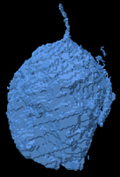Count 13093, 9182 Vertices, 18488 Triangles
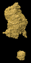Count 5832, 7950 Vertices, 16248 Triangles
UPENN-GBM-00251
Count 40155, 33428 Vertices, 67280 Triangles
Count 37759, 29045 Vertices, 59158 Triangles
Count 10623, 16231 Vertices, 33078 Triangles
UPENN-GBM-00156
Count 79499, 26230 Vertices, 52580 Triangles
Count 8641, 7803 Vertices, 15718 Triangles
Count 3062, 4171 Vertices, 8446 Triangles
UPENN-GBM-00158
Count 74280, 49870 Vertices, 101188 Triangles
Count 6603, 7744 Vertices, 15616 Triangles
Count 10508, 4642 Vertices, 9288 Triangles
UPENN-GBM-00166
Count 23752, 17852 Vertices, 36076 Triangles
Count 1172, 1601 Vertices, 3206 Triangles
Count 901, 2154 Vertices, 4508 Triangles
UPENN-GBM-00172
Count 52794, 33500 Vertices, 67716 Triangles
Count 16172, 20298 Vertices, 41116 Triangles
Count 18358, 11298 Vertices, 22904 Triangles
UPENN-GBM-00173
Count 90412, 46158 Vertices, 93140 Triangles
Count 3236, 4334 Vertices, 8720 Triangles
Count 2420, 6445 Vertices, 13530 Triangles
UPENN-GBM-00174
Count 7406, 10585 Vertices, 21698 Triangles
Count 6587, 8778 Vertices, 17752 Triangles
Count 6702, 6066 Vertices, 12212 Triangles
UPENN-GBM-00176
Count 35628, 25227 Vertices, 50918 Triangles
Count 21102, 20374 Vertices, 41148 Triangles
Count 9263, 11812 Vertices, 23972 Triangles
UPENN-GBM-00178
Count 1707, 3427 Vertices, 6850 Triangles
Count 14971, 22960 Vertices, 47108 Triangles
Count 26322, 15706 Vertices, 31824 Triangles
UPENN-GBM-00180
Count 102574, 54793 Vertices, 110142 Triangles
Count 44841, 35213 Vertices, 71010 Triangles
Count 25822, 17475 Vertices, 35314 Triangles
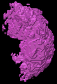UPENN-GBM-00189
Count 91803, 51547 Vertices, 103754 Triangles
Count 30360, 22630 Vertices, 45484 Triangles
Count 19762, 12383 Vertices, 24794 Triangles
UPENN-GBM-00192
Count 10342, 8491 Vertices, 17274 Triangles
Count 2297, 3327 Vertices, 6778 Triangles
Count 751, 2030 Vertices, 4028 Triangles
UPENN-GBM-00193
Count 15766, 16871 Vertices, 33686 Triangles
Count 35565, 40975 Vertices, 83038 Triangles
Count 44279, 30716 Vertices, 62256 Triangles
UPENN-GBM-00196
Count 17651, 11326 Vertices, 22664 Triangles
Count 37401, 32229 Vertices, 64814 Triangles
Count 24587, 18743 Vertices, 37678 Triangles
UPENN-GBM-00373
Count 24426, 18722 Vertices, 37680 Triangles
Count 4468, 5606 Vertices, 11320 Triangles
Count 3277, 2969 Vertices, 5930 Triangles
UPENN-GBM-00375
Count 71173, 33731 Vertices, 67946 Triangles
Count 19511, 25562 Vertices, 51820 Triangles
Count 32828, 19488 Vertices, 39360 Triangles
UPENN-GBM-00376
Count 112277, 38696 Vertices, 77600 Triangles
Count 17287, 13900 Vertices, 27808 Triangles
Count 15529, 6167 Vertices, 12330 Triangles
UPENN-GBM-00380
Count 20164, 15375 Vertices, 31178 Triangles
Count 106, 232 Vertices, 460 Triangles
Count 455, 855 Vertices, 1770 Triangles
UPENN-GBM-00384
Count 37036, 22427 Vertices, 44822 Triangles
Count 16184, 12520 Vertices, 25204 Triangles
Count 7547, 14426 Vertices, 29492 Triangles
UPENN-GBM-00388
Count 19281, 13800 Vertices, 27808 Triangles
Count 390, 687 Vertices, 1370 Triangles
Count 7114, 4969 Vertices, 10010 Triangles
UPENN-GBM-00390
Count 18628, 15293 Vertices, 30938 Triangles
Count 9703, 7732 Vertices, 15452 Triangles
Count 2219, 2940 Vertices, 5768 Triangles
UPENN-GBM-00391
Count 41844, 34445 Vertices, 69706 Triangles
Count 22986, 19933 Vertices, 39978 Triangles
Count 14412, 8332 Vertices, 16736 Triangles
UPENN-GBM-00393
Count 10911, 7194 Vertices, 14584 Triangles
Count 3611, 3802 Vertices, 7592 Triangles
Count 2063, 1588 Vertices, 3152 Triangles

UPENN-GBM-00398
Count 100479, 37528 Vertices, 75156 Triangles
Count 25719, 20404 Vertices, 41212 Triangles
Count 11539, 10921 Vertices, 21978 Triangles
UPENN-GBM-00402
Count 94789, 40142 Vertices, 80532 Triangles
Count 42739, 38148 Vertices, 76756 Triangles
Count 37835, 25978 Vertices, 52528 Triangles
UPENN-GBM-00404
Count 115520, 46600 Vertices, 93532 Triangles
Count 31930, 16787 Vertices, 33630 Triangles
Count 3827, 6842 Vertices, 13752 Triangles
UPENN-GBM-00418
Count 18061, 13953 Vertices, 28118 Triangles
Count 16375, 11506 Vertices, 23052 Triangles
Count 3472, 3904 Vertices, 7764 Triangles
UPENN-GBM-00428
Count 37250, 14923 Vertices, 29902 Triangles
Count 6206, 3436 Vertices, 6848 Triangles
Count 140, 390 Vertices, 756 Triangles
UPENN-GBM-00430
Count 42085, 32874 Vertices, 66848 Triangles
Count 15418, 19996 Vertices, 40204 Triangles

Count 33441, 18092 Vertices, 36312 Triangles
UPENN-GBM-00437
Count 33333, 28225 Vertices, 56478 Triangles
Count 43209, 34079 Vertices, 68670 Triangles
Count 21481, 24672 Vertices, 48896 Triangles
UPENN-GBM-00438
Count 33068, 15254 Vertices, 30596 Triangles

Count 1276, 1770 Vertices, 3540 Triangles
Count 115, 358 Vertices, 704 Triangles
UPENN-GBM-00439
Count 34278, 19490 Vertices, 39056 Triangles
Count 14480, 7164 Vertices, 14332 Triangles
Count 1006, 1486 Vertices, 2988 Triangles
UPENN-GBM-00474
Count 50756, 27019 Vertices, 54282 Triangles
Count 7158, 7104 Vertices, 14292 Triangles
Count 1281, 2726 Vertices, 5440 Triangles